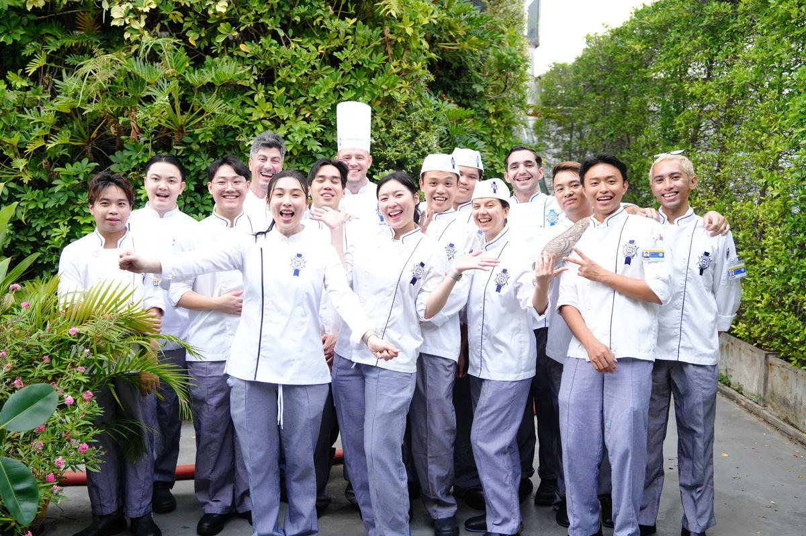
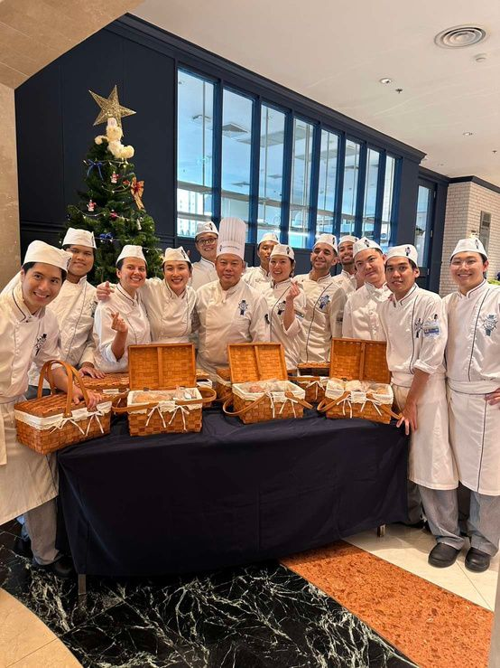
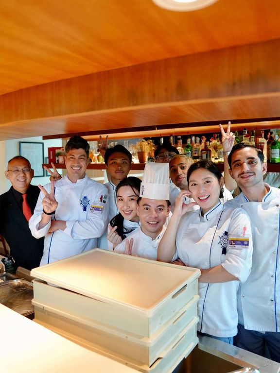

An Ode to Curiosity
Two dishes written out in full, a cold starter and a classical main, from my year at Le Cordon Bleu Dusit. Each component is broken down step by step, with photos from the kitchen and the costing behind every plate.

Curiosity
“A pure drive has kept me going at the lowest point of my life.”
While many people may have found their passion for cooking since childhood, whether through a grandmother’s recipe, a mother’s home cooking, or discovering great restaurants, my story as a cook did not start at a young age. In fact, I only learned how to turn on the stove at home quite recently, in 2022.
When COVID hit, many changes affected me and my family. It impacted my life in so many ways that I had to stop attending university and was left with no prospects for the future. I reached a state where my life felt as though it had absolutely no meaning. For a few years, it felt like I was trapped inside an abyss where no light could exist.
Then in 2022, while I was trying to lose weight and make meals for myself, my mom showed me the way to the kitchen and guided me through my first steps in cooking. At that point, I felt like I had nothing to gain in life, but also nothing to lose. So, on the spur of the moment, I decided to try recreating recipes from my favorite restaurants, definitely something very different from my family’s cooking.
I want to give my sincerest gratitude to Chef David Gee, Chef Rodolphe Onno, Chef Nidhipong Suriya, and all the instructors for sharing their knowledge with me as my teachers at Le Cordon Bleu Dusit. I also want to express my love and appreciation to the friends I met in class who have grown alongside me over the past year. May we all find joy on the road ahead in our culinary journeys.
Last but not least, big thanks to my brother from another mother, Abyan Ahmedizza Yusrin, for helping me design this book.
The Recipes
2 dishes · 15 components

Food Costing
In Thai Baht · 2 portions per recipe| Compulsory | 349 |
| Vegetables | 164 |
| Condiments | 24 |
| Nuts | 21 |
| Dairy products | 18 |
| Herbs | 13 |
| Dried goods | 12 |
| Fat | 6 |
| Gelling agents & binders | 3 |
| Flowers | 1 |
| Total | ฿611 |
| Per portion | ฿306 |
| Compulsory | 1,056 |
| Vegetables | 353 |
| Stocks | 156 |
| Fat | 89 |
| Condiments | 44 |
| Alcohols | 30 |
| Dairy products | 30 |
| Nuts | 20 |
| Herbs | 7 |
| Spices, dried goods, flours, others | 9 |
| Total | ฿1,794 |
| Per portion | ฿897 |
With gratitude
Le Cordon Bleu Dusit


Download the PDF
The complete cookbook as designed, with every component, step photo and illustration. 24 pages, about 9 MB.
Download PDF